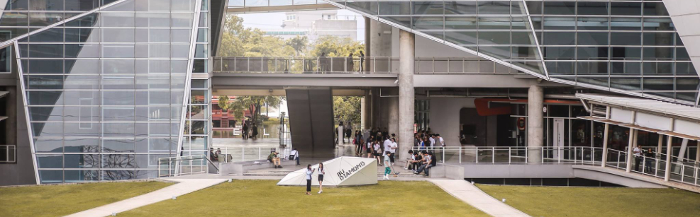
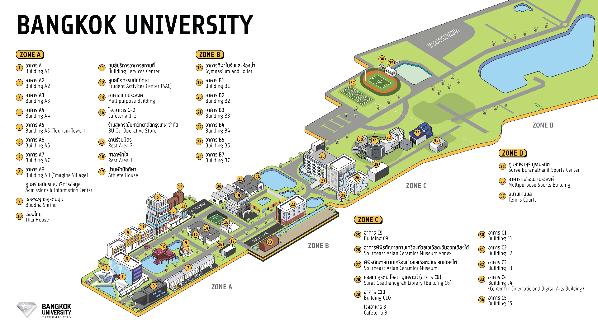

Admissions: admission@bu.ac.th

9/1 หมู่ 5 ถนนพหลโยธิน ตำบลคลองหนึ่ง อำเภอคลองหลวง จังหวัดปทุมธานี 12120
การเดินทาง
รถเมล์ สาย 39 ปอ.510 / ปอ.520
รถตู้ สาย ต.85-93 (ฝั่งเกาะพญาไท)
1. อนุสาวรีย์ชัยสมรภูมิ-มธ. (ศูนย์รังสิต) - ใกล้ BTS อนุสาวรีย์ชัยสมรภูมิ
2. สาย ต.118-1 หมอชิต-มธ. (ศูนย์รังสิต)
3. สาย 1008 (อยู่ตรงข้างฟิวเจอร์พาร์ค รังสิต)
4. ช่วงรังสิต-มธ. (ศูนย์รังสิต)
รถไฟฟ้าสายสีเขียว (BTS)
1. ลงสถานีหมอชิต (ทางออก 3,4) ต่อรถตู้สาย ต. 118-1
2. ลงสถานีอนุสาวรีย์ชัยสมรภูมิ (ทางออก 3,4) ต่อรถตู้สาย ต.85-93 (ฝั่งเกาะพญาไท)
3.ลงสถานีแยกคปอ. (ทางออก 1,3) ต่อรถเมล์ สาย 39,520
รถไฟฟ้าสายสีน้ำเงิน (MRT)
ลงสถานีจตุจักร (ทางออก 3,4) ต่อรถตู้สาย ต.118-1 หมอชิต-มธ. (ศูนย์รังสิต)
รถไฟฟ้าสายสีแดง (SRT)
ลงสถานี รังสิต ทางออกที่ 3 ต่อรถสองแถวสาย รังสิต-จารุศร
Main Campus Map

ติดต่อเพื่อเยี่ยมชม
สำหรับบุคคลทั่วไปติดต่อเยี่ยมชมมหาวิทยาลัยกรุงเทพ ได้ที่ฝ่ายรับสมัครนักศึกษา
เวลา 09.00 - 17.00 น. (จันทร์ - ศุกร์) ไม่เว้นวันหยุดนักขัตฤกษ์
ติดต่อเพื่อเยี่ยมชม
02-4073888 ต่อ 2411
ติดต่อเช่าสถานที่
นอกจากจะให้บริการทางการศึกษาแล้ว มหาวิทยาลัยกรุงเทพยังมีบริการพื้นที่ให้เช่า Main Campus ไม่ว่าจะเป็นพื้นที่ร้านค้าให้เช่า
บริการให้เช่าห้องประชุม สัมมนา บริการจัดเลี้ยง บริการพื้นจัดงานหรือจัดแสดงสินค้า
สนามกีฬาทั้งกลางแจ้งและในร่ม สถานที่ถ่ายทำภาพยนตร์และภาพนิ่ง และห้องสอบเพื่อจัดสอบ
บริการของเรา
1. ห้องประชุม / สัมมนา
2. พื้นที่สำหรับจัดงานสินค้าทุกประเภท
3. บริการงานจัดเลี้ยง
4. สนามกีฬากลางแจ้งและในร่ม
5. สถานที่ถ่ายภาพยนต์ / ภาพนิ่งทั้งภายใน และภายนอกอาคาร
6. ห้องสอบและห้องฝึกอบรม
7. พื้นที่เช่าร้านค้า